Ever since I've learned about nixie tubes I wanted to make a watch out of them. They just look so awesome. So when I found an ebay listing for 6 IN-16 tubes I had to buy them. When I got them I made a 555 step-up on a breadboard to get 170V required for nixies.
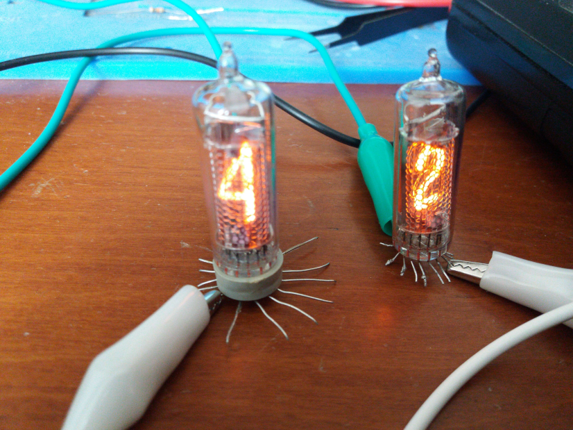Looked great, so I made a circuit with an attiny MCU and TPIC6B595 shift registries (can't use ordinary shift registries since low side voltage on nixies can float up to 50V!) on a breadboard, soldered the step-up as a separate module and tested that everything worked when powered from two Li-Ion batteries.
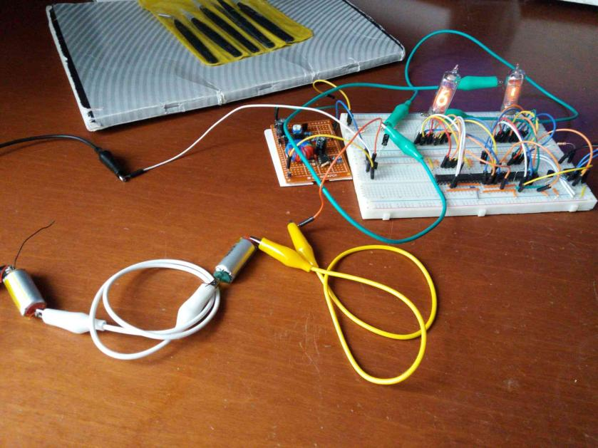Then I made a complete clock circuit with DS1307 RTC on a breadboard and made sure it's working.
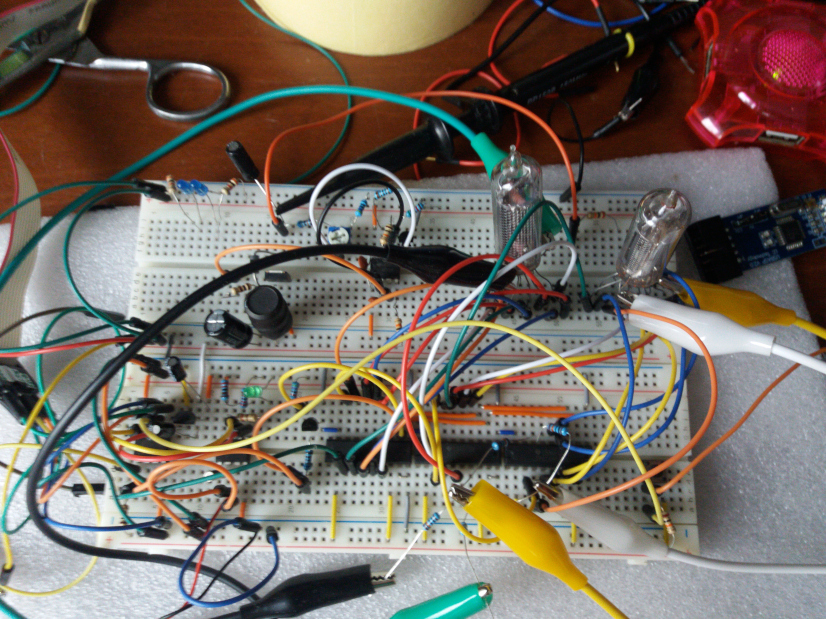 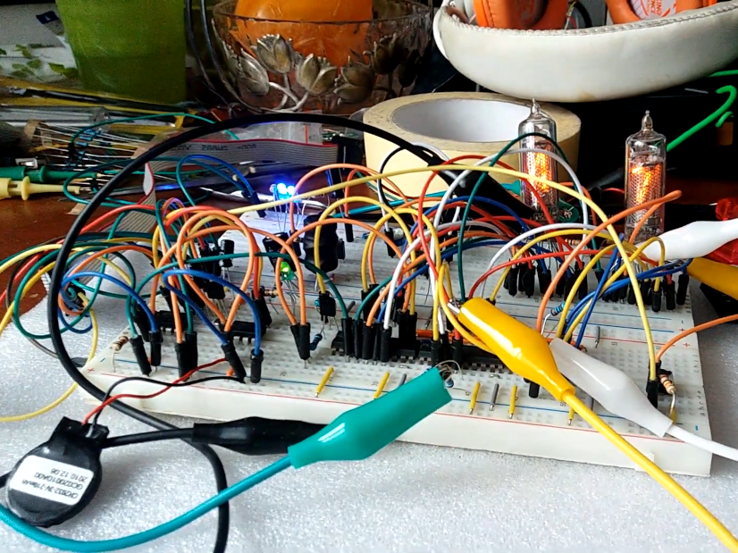It was time to solder everything and make it somewhat compact.
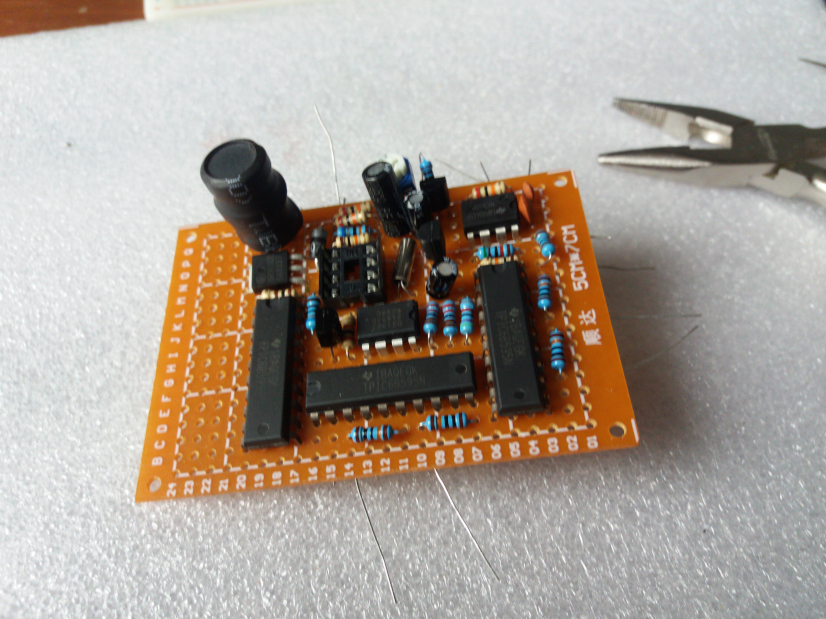 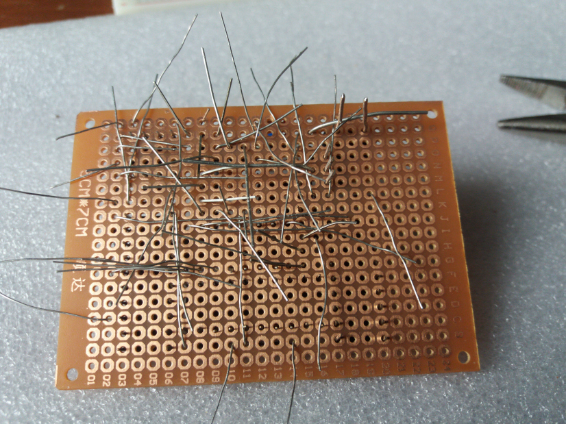 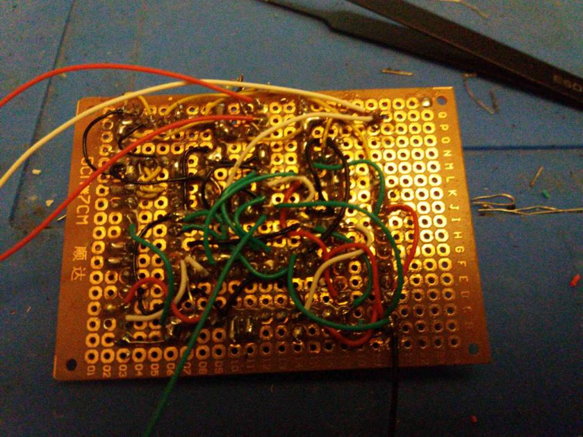Needless to say, it was a mess and didn't work. I had to design a custom pcb.
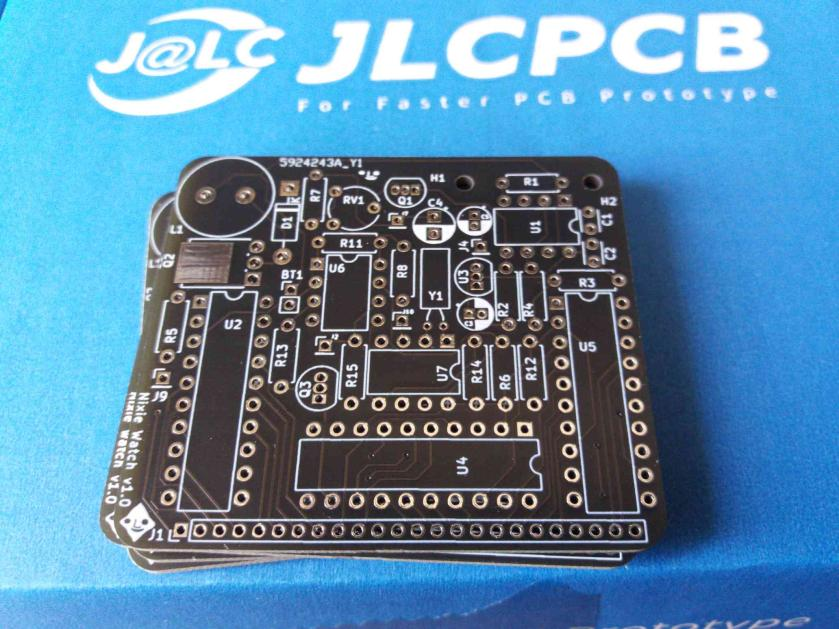 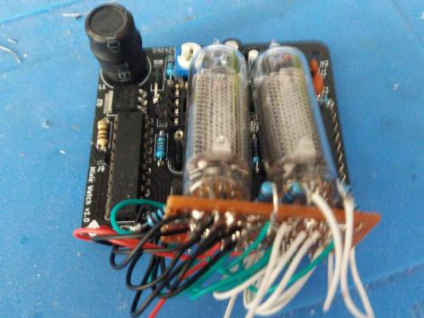This time I got it work. A chunky brick on my wrist.
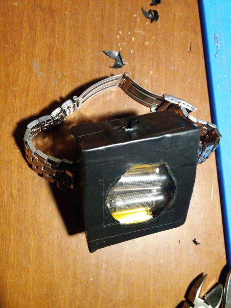 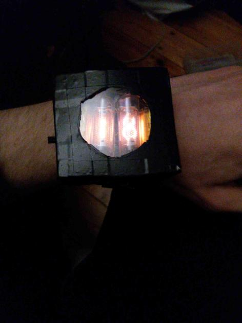I wanted to make it smaller, so I designed a new pcb with SMD components. Only after I got the pcb I realized that the ATtiny412 I planned to use uses proprietary programming interface (UPDI) which I could not get to work. So I did some dodgy soldering to use ATtiny25 with different pinout on my board.
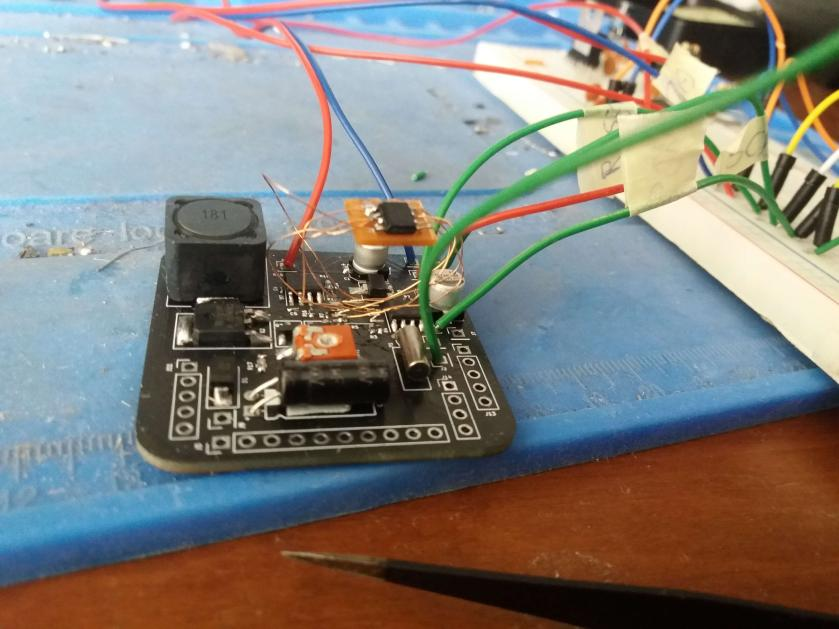I also got the case 3D printed.
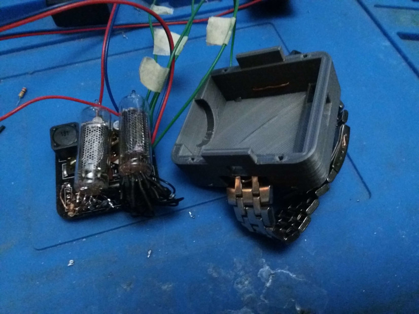Then I only had to put everything together. Since my measurements weren't precise I had to melt some plastic in the case to make room for the nixies. I realized that only after I broke one tube and had to replace it.
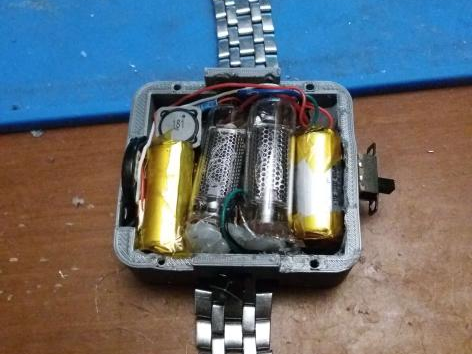